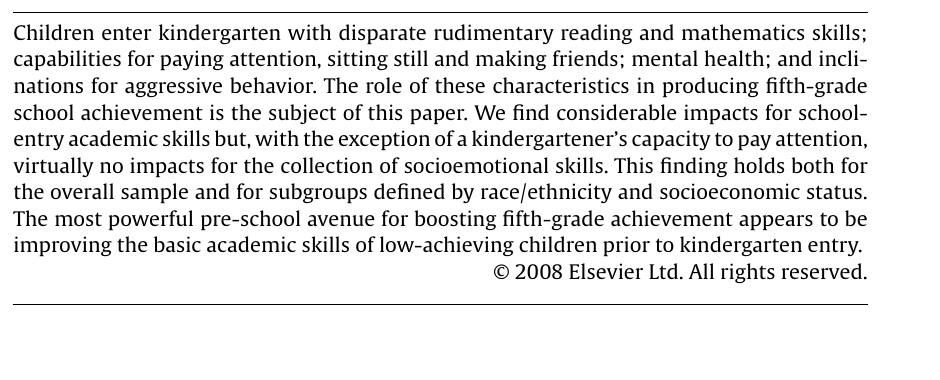
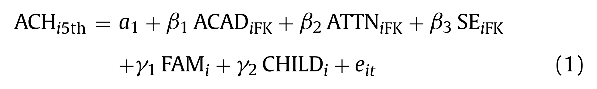
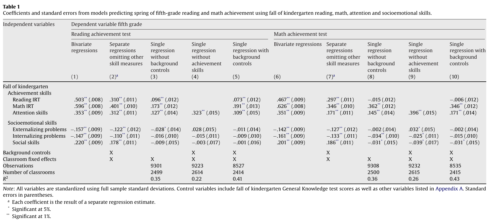

Course Overview, Regression Review, and Data Management
Module 1 • Kickoff Session
EDA6427 | Applied Education Policy Research
Today
1
Course overview — how the semester runs, and the two choices you need to start thinking about
2
Regression with controls — review from last term, then practice
3
Reading a results table — the same operation, in a published paper
4
Data management — importing, appending, merging, and saving
Two breaks. The last segment is self-paced, so you will not need to keep up with me.
Part 1
Course Overview
Course Purpose
Education leaders are regularly asked to act on quantitative evidence: whether a program worked, who it worked for, and where resources should go next.
Produce it
Take data you can get, analyze it, and report the result so that someone else can follow what you did and check it.
Evaluate it
Read a study, judge the design behind it, and decide how much weight the finding deserves before acting on it.
This course builds both. Your dissertation and the final project ask you to do both.
Weekly Cadence
Modules open Tuesday
Readings, recorded lecture, and the week’s tasks post Tuesday morning.
Work due Monday
The module’s assignments are due the following Monday at 11:59 PM ET.
Two live sessions
Today, and the final session in December for paper presentations.
Office hours are Mondays, 3–6 PM ET. The Calendly link is on Canvas.
Assignments
Component
Weight
What it is
Applied Data Analysis Assignments
25%
Three assignments, one per method block. Each is a commented .do file plus a written interpretation, on a two-week window.
Research Critiques
20%
Three written critiques of about 500 words, alternating with the data analysis assignments.
Paper Presentation
15%
A live presentation at the final session, teaching one published study to the class.
Final Project
30%
A written project in one of two formats, scaffolded across three milestones.
Participation and Engagement
10%
Discussion posts, interactive lectures, and the discussion at the final session.
Syllabus
This is the first time this course has been taught, so the syllabus may shift some.
In general, edits will likely be in the direction of making the course simpler, and I will communicate deadlines in a timely manner.
Course Structure
Some of you want to keep doing applied quantitative work; some are more interested in synthesizing what is already known. The final project is where you choose, and I will keep posting resources for applying the later material.
Final Project Formats
Pick the one that gives you something you can carry into your dissertation.
Option A
Original Research
A research proposal: framing of the problem and research question, a brief review of related literature, a proposed design, and a preliminary descriptive analysis using data you can get.
Fits you if you have data, or a realistic path to it
Option B
Research Synthesis
A structured review that synthesizes the empirical evidence on an education policy question: what has been studied, what the studies find, how credible they are, and what remains open.
Fits you if your question or your data access is still unsettled
You are not locked in until Milestone 1, the topic and framing memo due October 12.
Milestones
Three checkpoints. Each one gets written feedback before the next.
Milestone 1
Topic and Framing
Your question, why it matters, which format you are writing, and what evidence or data you will use.
Due Oct 12
Milestone 2
Preliminary Draft
A partial draft with your framing and literature in place, and your analysis or synthesis underway.
Due Nov 2
Final
Written Submission
The complete project, with exhibits and, for Option A, the .do file that produces them.
Due Dec 8
Full requirements are in the Final Project Directions on Canvas.
Final Session
Presentations of published papers.
Paper Presentation · 15%
You pick a published quantitative education study, and you teach it to the class: the question, the design, the findings, and the limitations. We critique it together afterward.
Final Project · 30%
Written submission only. There is no presentation of your own project.
Two separate assignments, two separate documents on Canvas.
Part 2
Regression with Controls
Review: Regression allows us to explore relationships between any two variables
A one-unit increase in SES is associated with 4.84 more points on the kindergarten reading assessment. SES explains about 16% of the variation in reading scores.
The Language Gap
What happens to a coefficient when you add another variable to the model.
Children whose families primarily speak a language other than English scored lower on kindergarten reading. Families who primarily speak another language are also more likely to be in poverty. So when we compare reading scores by language, some of what we are seeing may be about poverty.
We are back in the ECLS-K file you used for Modules 6 through 8 and for your capstones.
Adding a Control
No control
regress x1rscalk1 nonengl
Coefficient on nonengl: −3.28 Non-English-primary children score about 3.3 points lower.
Controlling for poverty
regress x1rscalk1 nonengl poverty
Coefficient on nonengl: −1.97 Holding poverty constant, the gap is about 40% smaller.
The number moved because language and poverty are correlated. Comparing children within the same poverty category gives a different answer than comparing all children at once.
Each coefficient is the relationship with reading holding the other variable constant. The N is 11,761, down from 14,097, because poverty is missing for some children.
Interpreting Controls
What it does
Compares observations that are alike on the control variable, so the coefficient reflects the relationship within those groups rather than across them.
What it does not do
Make the comparison causal. It handles the factors you measured and included, and does nothing about the factors you did not.
This is the same distinction you worked with last term: the confounders you can observe, and the ones you cannot.
Model Building
Add one variable at a time and watch the SES coefficient. Predict before each model.
Kindergarten reading
① SES only
② and Female
③ and Language
SES
4.842
4.839
4.774
Female
0.983
0.980
Non-English home
−0.545
R-squared
0.161
0.164
0.164
N
14,088
14,088
14,048
SES barely moves. Gender is close to unrelated to SES, so holding it constant changes nothing. Language is related to SES, so it moves the coefficient a little. Compare the language coefficient here, −0.545, with the −3.28 it had on its own.
Practice
Different outcome, different controls. Work in your breakout group, in Part 4 of saturday_demo_regression.do. Everyone runs the code on their own machine.
1
Regress the math score on SES. Write down the coefficient and the N.
2
Add female. Before you run it, predict: does the SES coefficient go up, down, or stay put?
3
Add disability. Same prediction first, then run it.
Two questions to answer as a group: what happened to the SES coefficient as you added controls, and why does the N change from model to model?
Pick one person to report back when we return.
Answer Key
Kindergarten math
① SES only
② and Female
③ and Disability
SES
5.962
5.962
5.989
Female
−0.237 (p = 0.156)
−0.742
Disability
−2.353
R-squared
0.193
0.193
0.204
N
14,041
14,041
11,359
Why SES holds steady
SES is close to unrelated to gender and only weakly related to disability, so holding them constant changes little. Compare the language example, where adding a related variable did move the coefficient.
Why the N drops
2,682 children are missing disability, and Stata drops any observation missing a variable in the model. Adding a control can change who is in your sample, not only what you hold constant.
Part 3
Reading a Results Table
The Paper
Claessens, Duncan, and Engel (2009), Economics of Education Review.
The question
Which kindergarten skills predict fifth-grade achievement: academic skills, attention, or socioemotional skills?
The data
ECLS-K, the 1998–99 kindergarten cohort. A different cohort from the file you have, same study design.
The sample
21,260 children at baseline. Missing data reduce the analysis samples to between 8,000 and 9,400.

Mark the word “impacts.” We come back to whether the design earns it.
The Model Behind Table 1
This is the regression the authors estimate, as it appears in the paper.

ACHi5th
The outcome: fifth-grade reading or math. Reading is columns 1 to 5 of Table 1, math is columns 6 to 10.
ACAD, ATTN, SE
The three kindergarten skill sets, measured in the fall. These are the rows of Table 1.
FAM, CHILD
Family and child controls. Adding these is what changes from one column to the next.
Every number in Table 1 is one of these coefficients, estimated on a different set of controls.
Table 1 as Published

This is what you will actually meet in a paper: ten columns, small type, and the notes doing a lot of work at the bottom. We will take the left half apart on the next slide.
Table 1 (Reading Outcome)
Fall of kindergarten
(1)
(2)
(3)
(4)
(5)
Reading IRT
.503** (.008)
.310** (.011)
.096** (.012)
.073** (.012)
Math IRT
.596** (.008)
.401** (.010)
.173** (.012)
.191** (.013)
Attention skills
.353** (.009)
.312** (.011)
.127** (.014)
.323** (.015)
.109** (.015)
Externalizing problems
−.157** (.009)
−.122** (.012)
−.028* (.014)
.028 (.015)
−.011 (.014)
Internalizing problems
−.147** (.009)
−.110** (.011)
−.016 (.010)
−.015 (.011)
−.009 (.010)
Social skills
.220** (.009)
.178** (.011)
−.009 (.015)
−.003 (.017)
−.001 (.016)
Background controls
X
X
X
Classroom fixed effects
X
X
X
X
Observations
9301
9223
8527
R²
0.35
0.22
0.41
(1) Bivariate regressions
(2) Separate regressions omitting other skill measures
(3) Single regression without background controls
(4) Single regression without achievement skills
(5) Single regression with background controls
Outcome: fifth-grade reading achievement. All variables standardized. Standard errors in parentheses. * p<.05, ** p<.01. Columns 6–10 in the paper repeat this for the math outcome.
Seven Questions
1
What is the outcome? Where does the table tell you?
2
What is one row? What does that variable measure?
3
What is one column? What model produced it?
4
What changes as you move across the columns?
5
What is in parentheses, and what do the stars mean?
6
What is the N, and why does it move?
7
What are the units? Can you say what the number means in a sentence?
Take the Reading IRT row and read it across: .503 → .310 → .096 → .073. Write the four numbers down before we talk about them.
Adds family background controls and classroom fixed effects, but no other kindergarten skills.
(3)
.096
Adds the other kindergarten skills, including math. No background controls.
(5)
.073
Everything: other skills, background controls, classroom fixed effects.
The big drop is from .310 to .096, and that comes from adding the other kindergarten skills. Adding the full set of family background controls after that moves the coefficient very little, from .096 to .073.
Reading Predicting Math
Same variable, now predicting fifth-grade math.
Fall of kindergarten
(6)
(7)
(8)
(9)
(10)
Reading IRT
.467** (.009)
.297** (.011)
−.015 (.012)
−.006 (.012)
Math IRT
.626** (.008)
.346** (.010)
.362** (.012)
.346** (.012)
Attention skills
.351** (.009)
.171** (.011)
.145** (.014)
.396** (.015)
.171** (.014)
Background controls
X
X
X
Classroom fixed effects
X
X
X
X
Observations
9308
9232
8535
R²
0.36
0.26
0.43
The same Table 1, right-hand half. Outcome is fifth-grade math. Kindergarten reading goes from .467 with no controls to −.006 once kindergarten math skill is in the model. What would a district leader conclude from column 6 alone, and what would they fund?
Writing About Regression Results
How the authors describe the table in the manuscript. A useful model for your own writing.
“Turning first to the full-control models in columns 5 and 10, it can be seen that fall of kindergarten math, reading and attention skills are predictive of subsequent reading achievement, while early reading skills are not predictive of subsequent math achievement.”
“The coefficients from our full-control models, shown in columns 5 and 10, are similar to those in columns 3 and 8, which suggest that the addition of the full set of family background variables … changes the coefficient estimates very little.”
Three things to copy: they name the exact columns, they state the direction and the size, and they write “predictive of” rather than “causes” or “improves.”
Part 4
Data Management
One of the biggest challenges in the capstone projects was handling Excel files and pulling relevant data together from multiple sources. How do you process, create, and use a dataset built from raw files across several years or sources?
The Six Steps
Three raw Excel files to one analysis-ready dataset. Work along in saturday_datamanagement.do; checkpoints on the step sheet.
Step
What you do
You should see
①
Import and clean the 2023 grade 3 file: lowercase the names, destring District Number and Grade, rename the unlabeled level columns.
74 obs
②
Do the same for grade 4 and append it.
147 obs
③
Prepare the 2024 grade 3 file, add a year suffix to the time-varying variables, and merge 1:1 on district and grade.
74 matched 73 unmatched
④
Break it on purpose: merge on district alone, then diagnose with duplicates tag.
146 rows tagged
⑤
Merge m:1 on district to add each district’s locale, then save under a new name.
146 matched 147 obs, 20 vars
⑥
Use it: a cross-tab of proficiency by locale, and a regression of 2024 proficiency on 2023.
χ² 6.09 slope 0.887
I am going to walk through this in Stata. If you feel comfortable in Stata and want to work at your own pace instead, that is completely fine.
Merge Diagnostics
Unmatched is not the same as wrong
In step ③, 73 rows do not match. Those are the grade 4 rows, and there is no 2024 grade 4 file. Reading _merge and explaining the number is the skill.
When a merge fails
Try merging on district alone, without grade, and watch it fail. Then use duplicates tag distid, gen(dup) to find out why. This is how you will actually debug your own merges.
One caution about these files: the 2024 mean scale scores are on a different scale from 2023. Compare the two years using Percentage in Level 3 or Above, not the scale score.
City and Suburban run about 20 points above Rural and Town, but with 146 districts across four categories the test does not clear the conventional bar. Not every test says yes.
N is 74 because only the grade 3 rows have a 2024 match. An R-squared of 0.86 says district proficiency barely moves year to year.
Next Steps
Finish the data management steps if you did not get through them today. The work-along file is saturday_datamanagement.do, with checkpoints on the step sheet.
Applied Data Analysis Assignment 1 posts Tuesday with Module 2: data management and advanced regression, due the following Monday at 11:59 PM ET.
Module 2, Multivariate Regression II, opens Tuesday.
Start thinking about your final project format. Read both sets of directions on Canvas.
Office hours Mondays, 3–6 PM ET. Email me if something will not run.